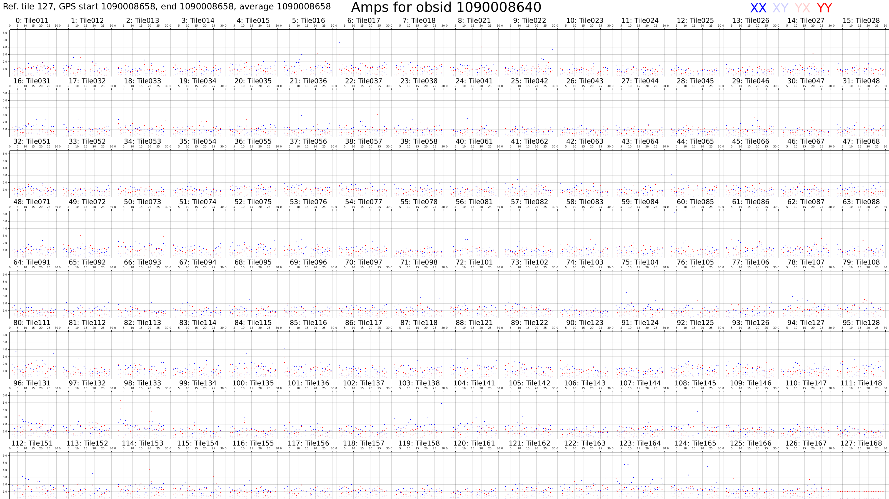
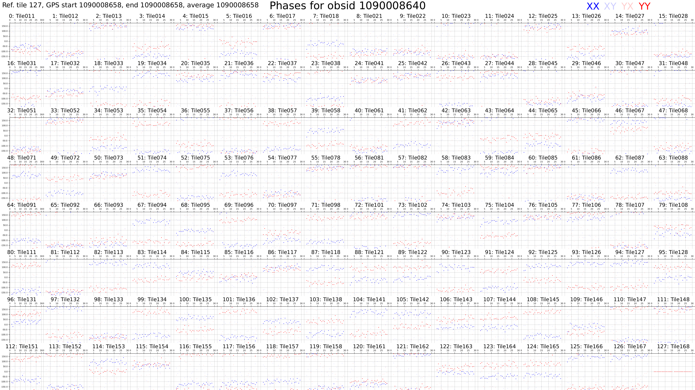
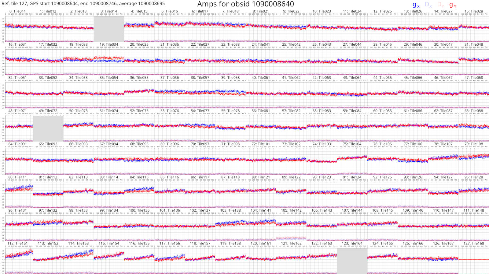
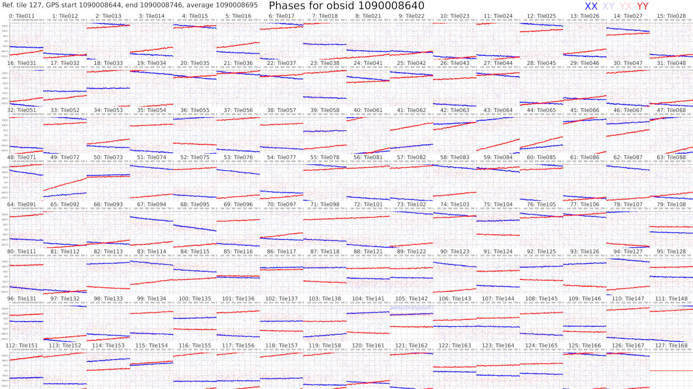
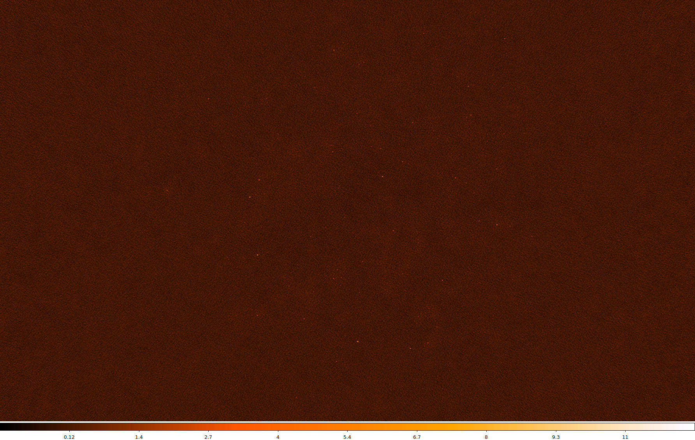
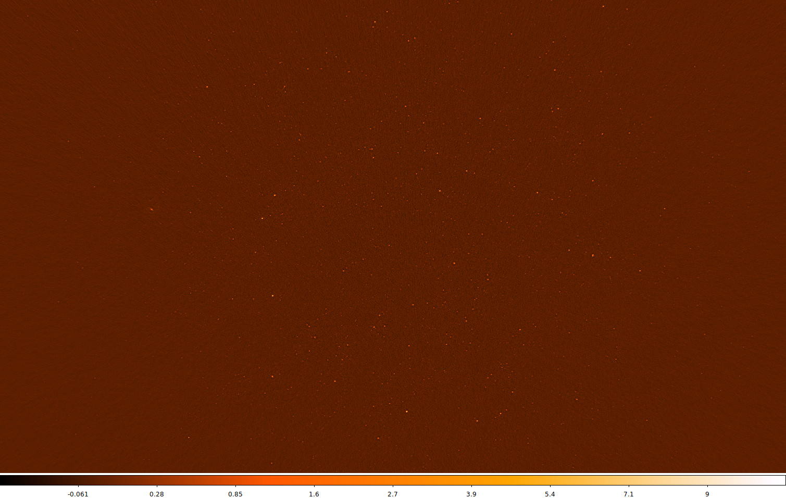

DI calibration tutorial
Here, a series of steps are laid out to demonstrate how raw MWA data is
calibrated with hyperdrive. We also plot calibration solutions and image
calibrated data with wsclean.
Install hyperdrive if you haven't already.
Step 1: Obtain data
Feel free to try your own data, but test data is available in the hyperdrive
repo; download it with this command:
$ git clone https://github.com/MWATelescope/mwa_hyperdrive --depth 1
$ cd mwa_hyperdrive
The files are test_files/1090008640/1090008640_20140721201027_gpubox01_00.fits
and test_files/1090008640/1090008640.metafits. This is tiny part of the real
1090008640
observation used
in hyperdrive tests.
Step 2: Obtain a suitable sky-model source list
It's very important to use a sky model that corresponds to the data you're using. For EoR fields, srclists contains many suitable source lists.
Here, a source list is already provided for testing:
test_files/1090008640/srclist_pumav3_EoR0aegean_EoR1pietro+ForA_1090008640_100.yaml.
Step 3: Run
We're going to run the di-calibrate subcommand of hyperdrive. If you look at
the help (with hyperdrive di-calibrate --help), you should see the --data
(-d for short) and --source-list (-s for short) flags under an INPUT FILES header. These are the only two things needed to do calibration:
$ hyperdrive di-calibrate -d test_files/1090008640/1090008640_20140721201027_gpubox01_00.fits test_files/1090008640/1090008640.metafits -s test_files/1090008640/srclist_pumav3_EoR0aegean_EoR1pietro+ForA_1090008640_100.yaml
Note: The above command can be more neatly expressed as:
$ hyperdrive di-calibrate \ -d test_files/1090008640/1090008640_20140721201027_gpubox01_00.fits \ test_files/1090008640/1090008640.metafits \ -s test_files/1090008640/srclist_pumav3_EoR0aegean_EoR1pietro+ForA_1090008640_100.yamlThis isn't specific to
hyperdrive; this is just telling your shell to use multiple lines separated by\.
Step 4: Understanding the output
The command we ran in step 3 should give us information on the input data, the sky model, any output files, as well as things relating to calibration. One line reports:
Reading input data and sky modelling
This indicates that hyperdrive is reading the data from disk and generating
model visibilities. This is usually the slowest part of the whole process, so
depending on your inputs, this could take some time. You should also see some
progress bars related to these two tasks.
Once the progress bars are finished, calibration can begin. You should see many lines like:
Chanblock 11: converged (50): 1e-4 > 9.57140e-7 > 1e-8
This indicates three things:
- Chanblock 11 converged;
- 50 iterations were performed; and
- The final error was 9.57140e-7, which is between 1e-4 and 1e-8.
What do these things mean?
A "chanblock" is a frequency unit of calibration; it may correspond to one or many channels of the input data.
Calibration is done iteratively, and by default is allowed to continue up to 50 times.
Finally, there is a "stop threshold" and "minimum threshold" for convergence. If the stop threshold (1e-8 by default) is reached before the maximum number of iterations, we say that the chanblock has converged well enough that we can stop iterating. However, if we reach the maximum number of iterations, one of two things happens:
- The chanblock convergence has not reached the stop threshold but exceed the minimum threshold.
- In this case, we say the chanblock converged and note that it didn't reach the stop threshold.
- The chanblock convergence has not reached either the stop or minimum (1e-4 by default) thresholds.
- In this case, we say the chanblock did not converge ("failed").
All of these calibration parameters (maximum iterations, stop threshold, minimum threshold) are allowed to be adjusted.
Step 5: Analyse
Don't assume that things will always work! A good indicator of how calibration
went is given toward the end of the output of di-calibrate:
All timesteps: 27/27 (100%) chanblocks converged
In this case, all chanblocks converged, giving us confidence that things went OK. But there are other things we can do to inspect calibration quality; good examples are plotting the solutions, and imaging the calibrated data.
Plotting solutions
First, we need to know where the solutions were written; this is also reported
toward the end of the output of di-calibrate:
Calibration solutions written to hyperdrive_solutions.fits
So the solutions are at hyperdrive_solutions.fits. We can make plots with solutions-plot; i.e.
$ hyperdrive solutions-plot hyperdrive_solutions.fits
The command should give output like this:
WARN No metafits supplied; the obsid and tile names won't be on the plots
INFO Wrote ["hyperdrive_solutions_amps.png", "hyperdrive_solutions_phases.png"]
This is warning us that additional information won't be on the plots because we didn't provide a metafits file. It isn't necessary, but we can easily fix this:
$ hyperdrive solutions-plot hyperdrive_solutions.fits -m test_files/1090008640/1090008640.metafits
Now the plots reported by the command should look something like this:
 
Each box corresponds to an MWA tile and each tile has dots plotted for each channel we calibrated. The dots are really hard to see because there are only 27 channels with solutions. However, if we look very closely, we can see that, generally, the dot values don't change much with frequency (particularly for the amps), or the dot values change steadily with frequency (particularly for the phases). This also hints that the calibration solutions are good.
The solutions plots for the full 1090008640 observation look like this:
 
Things are much easier to see when there are more dots! As before, changes with frequency are small or smooth.
More information on the calibration solutions file formats can be seen here.
Imaging calibrated data
We have calibration solutions, but not calibrated data. We need to "apply" the solutions to data to calibrate them:
$ hyperdrive solutions-apply \
-d test_files/1090008640/1090008640_20140721201027_gpubox01_00.fits \
test_files/1090008640/1090008640.metafits \
-s hyperdrive_solutions.fits \
-o hyp_cal.ms
This will write calibrated visibilities to hyp_cal.ms. Now we can image the
measurement set with wsclean:
$ wsclean -size 4096 4096 -scale 40asec -niter 1000 -auto-threshold 3 hyp_cal.ms
This writes an image file to wsclean-image.fits. You can use many FITS file
viewers to inspect the image, but here's what it looks like with
DS9:

Sources are visible! Generally the image quality is OK, but not great. This is because there was very little input data.
When using the full 1090008640 observation, this is what the same image looks like (note that unlike the above image, "sqrt" scaling is used):

Many more sources are visible, and the noise is much lower. Depending on your science case, these visibilities might be "science ready".